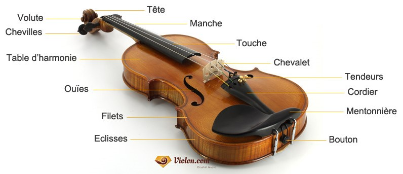
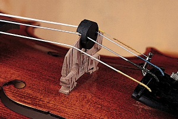

Le violon
À propos du violon
Le violon est un chordophone en bois (instrument à cordes). Il est le plus petit et le plus aigu de la famille des instruments à cordes. Il a généralement quatre cordes à la quinte. Il peut être joué en frottant l’archet aux cordes ou pinçant les cordes avec les doigts (pizzicato).
Les violons sont les plus importants dans la musique classique occidentale et dans de nombreuses variétés de musique folklorique, mais ils sont également fréquemment utilisés dans la musique country, le jazz et même la musique rock.
En orchestre, les violons sont divisés en 2 sections, 1er violons et 2nd violons. Le chef des 1ers violons (the leader of first violins) est également nommé le chef de l’orchestre (concert-master).
Histoire
On pense que le premier violon a été construit vers 1555 par Andrea Amati, bien que personne ne soit sûr de l'année exacte. Les anciennes versions de l'instrument n'avaient que trois cordes et étaient connues sous le nom de «Violetta». Il semble que le violon ait emprunté des caractéristiques à trois instruments existants :le rebec, en usage depuis le XIVe siècle (lui-même dérivé du rebab de la musique arabe), la vièle et la lira da braccio.
rabab
vièle
lira da braccio
Gamme
Un violon peut jouer du sol en dessous du do médian, connu sous le nom de G3, jusqu'à un mi aigu de deux octaves au-dessus de sa corde la plus élevée, connue sous le nom d’E7. Chacune des quatre cordes est accordée à une cinquième d'intervalle, constituant les notes Sol, Ré, A et E. Le son est produit lorsque les vibrations des cordes résonnent à l'intérieur du corps en bois de l'instrument.
Les éléments de composition du violon :
Le violon est constitué de 70 à 85 pièces, collées ou emboîtées, qui forment trois grandes parties: le corps, la manche et la tête.
Learn MoreTaille
| Taille | Age | Longueur (cou/poignet) |
|---|---|---|
| 1/16 (seizième) | 3 ans et moins | 35 cm |
| 1/10 (dixième) | 4-5 ans | 39 cm |
| 1/8 (huitième) | 5-6 ans | 42 cm |
| 1/4(quart) | 6-8 ans | 47 cm |
| 1/2 (demi) | 8-10 ans | 51 cm |
| 3/4 (trois-quart) | 10-12 ans | 55 cm |
| 4/4(entier) | 12 ans et plus taille adulte |
58 cm |
Accessoires pour violon
Colophane(rosin)
La colophane tire son nom d’une ville de la Grèce antique, baptisée « Kolophôn », d’où l’on extrayait des arbres résineux, par la distillation de plusieurs éléments, le précieux résidu.
Tous les musiciens d’instruments à cordes frottées (contrebasse, violoncelle, alto, violon) sont amenés à l’appliquer sur leur archet, car sans elle, les crins glissent trop et ne produisent aucun son ou un léger murmure. Concrètement, la colophane crée une accroche sur les cordes, liée à l’origine du son produit
Sourdine(Mute)
Comme son nom le suggère, la sourdine vise à réduire la puissance sonore du violon : généralement fixé sur le chevalet, cet accessoire permet de réduire l'émission sonore de 20 à 80 %. Concrètement, une fois correctement placé, il altère le timbre et absorbe les vibrations des cordes, pour diminuer le volume émis par la caisse de résonance.
On distingue 2 types de sourdines:
- La sourdine d'appartement, destinée à limiter le bruit généré par le violon
- La sourdine d'orchestre, destinée, soit à éviter que le violon ne couvre les sons des autres instruments soit, dans le cadre d'un concerto pour violon, à lui offrir un timbre plus agréable pour l'oreille des spectateurs.
- 
À noter que si la première peut atténuer le son jusqu'à 80 %, la seconde ne le réduit qu'à hauteur de 20 % environ, au maximum.
Coussin(shoulder rest)
le violon repose sur la clavicule du violoniste. Puisque le violon est en bois, un matériau par nature très dur, celui-ci risque de rendre le jeu plutôt désagréable. C'est ainsi que le violoniste peut insérer un coussin, ou une épaulière entre sa clavicule et le bouton de son instrument.
Un bon coussin de violon s'installera donc sur la clavicule gauche du violoniste afin de réceptionner le violon et manier l'archet - de la main droite, conventionnellement - avec aisance.
L'épaulière, ou coussin de violon se présente sous la forme d'une barre ondulée et rigide, molletonnée et traversant tout le dos du violon, qui vient épouser la forme de la clavicule du violoniste.
Il faut savoir que le port d'une épaulière ajoute de la difficulté à maintenir l'instrument et à jouer avec justesse puisque l'accès aux cordes avec les doigts de la main gauche est rendu plus complexe. Sans épaulière, l'intensité sonore du violon se trouve enrichie, plus profonde et plus naturelle.
Métronome
Inventé par l’Autrichien Johann Nepomuk Maelzel, le métronome traditionnel sert à indiquer le bon tempo – autrement dit, la vitesse à laquelle le morceau doit être joué. Une indication matérialisée sur la partition par une noire suivie du signe égale et d’un chiffre. Par exemple, si la valeur d’une noire est à 60, cela signifie que 60 noires peuvent être jouées à la minute, qu’il y aura 60 battements du métronome, à raison d’une par seconde. Dans le processus d’apprentissage, il est courant de suivre une progression métronomique pour atteindre le bon rythme : à partir d’un tempo plutôt lent, on augmente régulièrement la difficulté technique pour aller jusqu’au niveau requis. Sur le marché, au-delà du modèle traditionnel de métronome, il existe des versions électroniques, voire virtuelles…
Par exemple, si la valeur d’une noire est à 60, cela signifie que 60 noires peuvent être jouées à la minute, 60 noires peuvent être jouées à la minute.
60 noires peuvent être jouées à la minute 60 noires peuvent être jouées à la minute pour atteindre le bon rythme : à partir d’un tempo plutôt lent, on augmente régulièrement la difficulté technique pour aller jusqu’au niveau requis.
Sur le marché, au-delà du modèle traditionnel de métronome, il existe des versions électroniques, voire virtuelles… .
Stand

Un pupitre est un support surélevé conçu pour contenir une partition papier ou des feuilles de musique en position pour la lecture.
La plupart des pupitres pour orchestre, musique de chambre ou instruments solo de la famille des orchestres (violon, hautbois, trompette, etc.) peuvent être relevés ou abaissés pour accueillir des interprètes assis ou debout, ou des interprètes de différentes hauteurs.
Prix des violons:combien coûtent les violons?
Débutant:
Entre 200 et 400 dollars, vous pouvez trouver des violons d'étude de bonne qualité. Leur sonorité est tout-à-fait acceptable pour les grands débutants, même s'il est parfois nécessaire de changer les cordes d'origine pour des cordes de meilleure qualité.
Niveau intermédiaire : Entre le violon d'étude et le violon de maître
A ce niveau intermédiaire, le violon convient aussi bien aux débutants exigeants qu'aux musiciens plus avancés. Ils sont d'une qualité supérieure, tant dans leurs finitions que dans leurs sonorités. Leurs prix varient énormément selon leur origine : de 500 à 2000 dollars !
Niveau professionnel : Les violons de maître
Pièces uniques, (handmade), reproductions de violons célèbres, ces violons sont surtout destinés aux musiciens experts, professionnels ou passionnés. La qualité de leur son et leur confort de jeu sont incomparables. Ils sont entièrement fabriqués de manière traditionnelle par des luthiers. Là encore les prix s'envolent pour ceux qui sortent des ateliers: pas moins et souvent bien plus de 7000 dollars! (3000 ; +)

Ecouter la différence entre $69 vs $10,000,000 Stradivarius Violon- Ray Chen:
Sais-tu que?
Un violon Stradivarius détient le record du monde de l'instrument de musique le plus cher vendu aux enchères, récoltant 16 millions de dollars à Londres en juin 2011 pour recueillir des fonds de secours aux sinistrés du tsunami.
Le mythe des Stradivarius